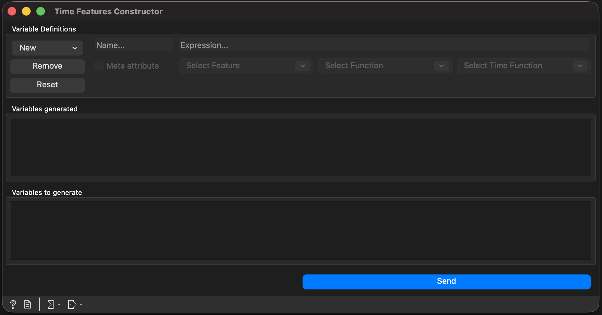

Time Features Constructor¶
The Time Features Constructor builds new numeric, datetime, categorical or text variables from existing ones via Python-style expressions and a family of time-window functions. It is the central widget for time-series feature engineering inside TimeFeatures.

The Time Features Constructor widget.¶
Inputs¶
Signal |
Type |
Description |
|---|---|---|
Data |
|
Source table whose columns can be referenced from expressions. |
Variable Definitions |
|
Optional configuration table ( |
Outputs¶
Signal |
Type |
Description |
|---|---|---|
Data |
|
The source table extended with the newly generated variables. |
Variable Definitions |
|
A |
Controls¶
New — adds a new variable definition to the editor.
Remove — deletes the selected definition.
Reset — clears every definition and rolls the widget state back to the original input.
Send — re-evaluates every definition against the input data.
Each editor row exposes a name field, a meta-variable toggle, the expression field, a source-variable picker, a standard function picker and a time-function picker.
Expressions¶
Expressions are evaluated as restricted Python. Variable references use the sanitised name — spaces and most punctuation are replaced with underscores, and identifiers that start with a digit receive a leading underscore.
age + 1
log(price)
shift(age, -20)
mean(temperature, -2, 2)
abs(velocity) + sqrt(altitude)
The evaluation environment is locked down: __builtins__ is replaced
with an empty dict so dangerous calls like __import__ or open
fail with NameError. Only the names listed below are exposed.
Available names¶
Group |
Names |
|---|---|
Safe builtins |
|
|
Every public attribute ( |
Random helpers |
|
Aggregators |
|
Time-window functions¶
These functions operate on the whole column rather than the current
row’s value, so they need the entire input to be in memory. Out-of-range
indices produce missing values; NaN entries inside the window are
ignored.
Function |
Semantics |
|---|---|
|
Value of |
|
Sum over the inclusive window |
|
Arithmetic mean over the window. |
|
Number of non-missing values inside the window. |
|
Extreme of the non-missing window values. |
|
Population standard deviation (delegates to |
Window semantics across chunks¶
Orange chunks tables into 5 000-row blocks when computing derived
columns. The widget caches the full column result on first use and
returns the appropriate slice for each chunk, so a call like
shift(x, -20) keeps the right value across chunk boundaries even on
multi-million-row tables.
Chained descriptors¶
Descriptors may reference each other. For example:
X1 := shift(price, -1)
X2 := X1 + bias
When this happens, the widget topologically sorts the descriptors by
their dependencies and applies them in cascade — each transform step
runs against the table state produced by the previous step, so X2
sees X1 as if it were a regular source column.
The order you click New in does not matter. Define
X2beforeX1and the cascade still works.Cycles are detected: writing
X1 := X2 + 1together withX2 := X1 + 1raises a Circular dependency between descriptors: X1, X2 error instead of producing garbage.Per-descriptor error reporting: if one expression fails (e.g.
shift(unknown, -1)), the error mentions the descriptor name so you know which row to fix.Time-window correctness is preserved through the chain: a chained
X2that readsX1over a window keeps producing the right values even past Orange’s 5 000-row chunk boundary.
Workflow persistence¶
The editor list (“Variables to generate”) is the single source of truth.
It is stored as Setting(..., schema_only=True), mirroring the
upstream Orange Feature Constructor convention introduced in v4. This
means:
Definitions survive workflow save and reload, even before clicking Send.
Each Send re-transforms the original input, not the previous output, so descriptors are not consumed and there is no cumulative state to clean up.
The Reset button is the only path that empties the editor.
Usage Example¶
A 3-day rolling average for daily temperature readings:
mean(temperature, -2, 0)
This computes the mean of the current day plus the two preceding days. A 5-day forward standard deviation:
sd(temperature, 1, 5)
Combined features work too:
(max(price, -7, 0) - min(price, -7, 0)) / mean(price, -7, 0)